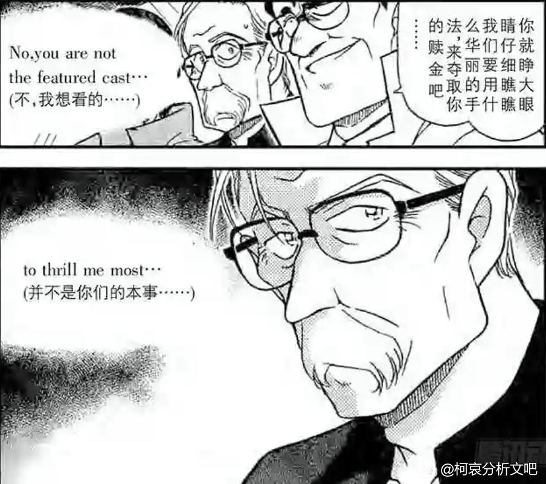

青山很喜欢在12月画些大事件，比如寻找玛利亚篇揭晓乌丸莲耶是boss，海猿岛篇揭晓胁田兼则是Rum，羽田案真相的揭晓都是在12月。所以专门开贴整理下从1995年到2023年的12月青山都更新了哪些案件。
2023年12月：青山休刊
2024-05-21 06:41 | proyekt_rot:忍俊不禁😃😃😃2024-05-21 07:03 | 世界上没有真理:回复 proyekt_rot :笑了2024-05-21 08:21 | 鶴见-泠鸢:难绷2024-05-21 08:40 | 小红红真红:2024-05-21 09:38 | 贴吧用户_aZQb9A8:绷不住笑了
2024-05-21 10:16 | 坚信内心的勇气:你上来就放王炸2024-05-21 12:26 | 冰凉的绿:2024-05-21 19:47 | 即将02的废物月:合格的二楼2024-05-21 20:58 | 王道球球:2024-05-21 22:20 | 陈酿青梅酒:果然是12月的大事件呢
绷2024-05-22 03:46 | 柑橘香水💞:笑死，开头即是暴击2024-05-25 12:39 | -灰原哀不哀-:上来就没绷住2024-08-19 22:48 | ºMeetº:其实去年的12月《大事件》应该只是被提前到了11月，然后让好多年没登场过的白马探再度登场


2022年12月：12月7日青山更新第1104话[染血的骑士]，正式揭晓羽田案，刻画了Rum当年的失误。
2021年12月：12月1日青山更新了这一系列，揭晓了主线召唤神操哥是诸伏景光的儿时玩伴。
M28是长野三人组的剧场版，操哥可能也会参与其中。
M28是长野三人组的剧场版，操哥可能也会参与其中。
2024-05-21 12:27 | 冰凉的绿:最新的漫改动画2024-05-22 01:22 | 饼干出多了:动画还有两年半才追上漫画2024-05-22 04:14 | 婧er倪:回复 饼干出多了 :就73那休刊进度要追上容易得很
2020年12月：海猿岛篇揭晓Rum的真实身份。
2024-05-22 00:05 | 黴餒hjcrkb:还真没发现海猿岛已经这么久啊了2024-05-22 09:16 | EdwardClow:时间过得真快
回复 黴餒hjcrkb :是啊
2019年12月：第1044话更新太阁名人的将棋盘篇，讲述了羽田秀吉的故事。我4月发的帖子【黄昏之馆案对结局的暗示】中多次说明了[将棋]在主线中的重要作用，将棋和A药和[宝]息息相关，这里不再赘述。
2018年12月：世良的追问篇，世良发出质问，新一柯南有没有同时出现过，兰神却不再怀疑柯南等于新一。
2024-05-21 10:24 | 厄萨雷恩女伯爵:小哀：变大一次可把你牛逼坏了2024-05-21 19:35 | 剑锋寒光:园子神观察2024-05-21 19:38 | EdwardClow:一脸不爽是真的，对象猜错了
回复 剑锋寒光 :园子真相帝
2017年12月：寻找玛利亚篇揭晓乌丸莲耶是boss。
2016年12月：伊织无我初登场。作为红叶的管家，他也是个主线人物，毕竟他曾是黑田的下属。
2024-05-22 00:15 | 饼干和熊:居然已经这么多年了2024-05-22 09:16 | EdwardClow:回复 饼干和熊 :是啊
2015年12月：千叶减肥篇。千苗cp是柯哀初遇论的情节复刻之一，千叶苗子那越过13年的思念，可不要认为这二人的故事不重要。
2014年12月：啄木鸟篇，黑田兵卫初登场。
2013年12月：水族馆篇，工藤新一喜欢鲨鱼，鲨鱼海豚论的伏笔回收。
2012年12月：香甜冰冷快递篇，柯南面对光哀展现出了不爽的表情。
2011年12月：侦探们的夜想曲篇，正式开启波本三选一。
兰神又对帅哥脸红了
兰神又对帅哥脸红了
2010年12月：纸牌篇，柯南感冒了，灰原独自带领少年侦探团破案，被步美调侃露出了和柯南一样的表情，小哀听后微微脸红，这篇章算是柯哀的小糖。
2024-07-26 21:14 | mangomengke07:吐槽一下，某解说up最近更新了这个案的吐槽，通篇在吐槽纸牌篇“为了剧情牺牲人物”，可这明明是刻画人物的典型案件2024-07-26 23:13 | EdwardClow:回复 mangomengke07 :无良UP太多了，为了热度无所不用其极2024-08-17 04:41 | mangomengke07:回复 贴吧用户_a43ZSXM :哟，up真爱粉都追到这来了，你倒是说说哪里蠢？盲信柯南不要自己动脑才不蠢是吧
2009年12月：小兰的恋爱签写着[要让思路清晰的他倾心，只要保持原来的自己就可以了，因为就算装可爱，也会马上被看穿，所以一定要小心，只要保持原本的天真烂漫，相信自己勇往直前，你的心意一定能传达给他！]
小兰有没有装可爱？甜甜圈事件已经告诉我们答案了，并且柯南真的像恋爱签上所写的看穿了小兰的装可爱。
兰神啊，是你自己不争气啊！恋爱签上的话你是一点也没听进去啊。
小兰有没有装可爱？甜甜圈事件已经告诉我们答案了，并且柯南真的像恋爱签上所写的看穿了小兰的装可爱。
兰神啊，是你自己不争气啊！恋爱签上的话你是一点也没听进去啊。
 顶顶顶
顶顶顶2008年12月：怪盗基德VS最强金库
2007年12月：怪盗基德的瞬间移动魔术
2007年12月：怪盗基德的瞬间移动魔术
2006年12月：恶魔的眼泪
我4月发的主题贴[黄昏之馆案对大结局的暗示]中提到了恶魔这一元素与兰的关联，这里不再赘述。
我4月发的主题贴[黄昏之馆案对大结局的暗示]中提到了恶魔这一元素与兰的关联，这里不再赘述。
2024-05-21 21:13 | dldfj114514:饿狼，是你吗饿狼2024-05-21 21:31 | EdwardClow:回复 dldfj114514 :也看一拳超人呀2024-05-22 04:03 | 终虐Ω反乌托邦:回复 dldfj114514 :电视台的饿狼
2005年12月：1年B班大作战
这个篇章是玛利亚的初登场，她是灰原哀故事线的缩影，这里不再赘述，详情请见5月9日发的主题贴对寻找玛利亚篇的解读。
这个篇章是玛利亚的初登场，她是灰原哀故事线的缩影，这里不再赘述，详情请见5月9日发的主题贴对寻找玛利亚篇的解读。
2004年12月：赤井秀一的700码事件
琴酒的脸颊被子弹擦伤后至今没有痊愈，柯哀二人中弹但恢复如初，这两者形成了鲜明的对比，真相便是柯哀都服用了A药，而A药有修复伤口的神奇功效。
琴酒的脸颊被子弹擦伤后至今没有痊愈，柯哀二人中弹但恢复如初，这两者形成了鲜明的对比，真相便是柯哀都服用了A药，而A药有修复伤口的神奇功效。
赶上直播了
2024-05-21 10:13 | EdwardClow:是呀
2003年这12月：码头案，这个时期灰原画风真好看
柯南吐槽[这家伙真的一点都不可爱~~]
甜甜圈事件中是哪个角色装可爱来着
两者又形成了鲜明的对比。
柯南吐槽[这家伙真的一点都不可爱~~]
甜甜圈事件中是哪个角色装可爱来着
两者又形成了鲜明的对比。
2002年12月：东都现象所的秘密，柯哀经典名场面。
2024-08-17 04:58 | 贴吧用户_a43ZSXM:居然是02年的
2001年12月：佐藤决定不再陷入有关松田阵平的回忆中，她要与高木一起展望未来。
2000年12月：詹姆斯布莱克初登场。
我至今仍然认为詹姆斯的立场并不是纯红，他应该是一个灰色立场的人物，他的终极目的与抢夺A药有关。
我至今仍然认为詹姆斯的立场并不是纯红，他应该是一个灰色立场的人物，他的终极目的与抢夺A药有关。

2024-05-21 10:24 | 世界上没有真理:感覺很多人懷疑詹姆斯2024-05-21 10:29 | EdwardClow:回复 世界上没有真理 :詹姆斯实在是太可疑了，红黑篇詹姆斯说完他的观点，柯南内心是“……”，关键是有好几张这样的分镜2024-05-21 23:37 | 世界上没有真理:回复 EdwardClow :話說詹姆斯跟瑪莉亞的爺爺長的有點像......2024-05-21 23:39 | EdwardClow:回复 世界上没有真理 :可以说是特别像2024-05-21 23:58 | 世界上没有真理:回复 EdwardClow :不知道有沒有在暗示啥？2024-05-22 00:31 | EdwardClow:回复 世界上没有真理 :玛利亚爷爷打造了花边之门阻碍小哀前行，如果以后出现詹姆斯阻碍灰原的剧情就好玩了2024-05-22 00:55 | 世界上没有真理:回复 EdwardClow :好有趣的想法

1999年12月：人鱼岛篇
这一篇应该是青山对平和cp塑造的巅峰。
这一篇应该是青山对平和cp塑造的巅峰。
1998年12月：再会篇
眼镜超人的这一幕跨越了25年再次在M26中展现
眼镜超人的这一幕跨越了25年再次在M26中展现
2024-05-21 22:23 | 陈酿青梅酒:真神降临

1997年12月：竞技场篇
这个时候灰原还不知道兰神的存在，总撩柯南
这个时候灰原还不知道兰神的存在，总撩柯南
2024-05-21 22:23 | 陈酿青梅酒:路过被刀2024-05-21 23:33 | 藏白白▫:然后一撩一个准是吧2024-05-22 21:43 | 史桩之玄枵:这时期画风真可爱。印象里动画版这集哀要说年龄的时候被打断了2024-05-22 22:35 | EdwardClow:回复 史桩之玄枵 :漫画里也是被打断了2024-05-22 22:36 | EdwardClow:回复 藏白白▫ :符合柯南xp没办法2024-05-22 22:36 | EdwardClow:回复 陈酿青梅酒 :啊？2024-07-04 12:33 | 卷福花生酱酱酱:柯子被撩得懵懵的，好萌


1996年12月：小兰含泪的推理
2024-08-17 04:59 | 贴吧用户_a43ZSXM:就是你。
1995年12月：服部平次初登场
名侦探柯南从1994年连载至今，只有2023年的12月休刊，其余年份的12月均为漫画连载状态。
2024-05-21 10:32 | 世界上没有真理:只有2023年12月份休刊，不過這年對柯哀來說很重要，m26出世，還有就是往年的聖誕哀2023年第一次有語音
感觉主线篇多，柯哀的也多
2024-05-21 10:30 | EdwardClow:对
借楼问一下，有没有人记得柯南有一个故事是侦探团在烂尾楼里有个疯子和被水泥封死的楼梯间，还是我记错了？如果有的话是哪一话？
2024-05-21 13:02 | ypa1917:这是漫画特别篇，相当于同人2024-05-21 13:11 | 厄萨雷恩女伯爵:回复 ypa1917 :ok
那麼是否可以期待一下2024年的12月份呢？
2024-05-21 10:36 | EdwardClow:今年12月应该是赤井务武的故事2024-05-21 10:39 | 世界上没有真理:回复 EdwardClow :赤井務武也許還有若狹，就是不知道會不會有初遇劇情2024-05-21 10:49 | EdwardClow:回复 世界上没有真理 :因为这是十多年前的事，所以需要剧中角色的回忆才能展现故事全貌。现在黑田回忆完毕，还剩若狭和Rum的回忆没展现。如果是若狭视角，从赤井务武联想到初遇论有些困难啊。Rum视角回忆那更和初遇论没关系了。2024-05-21 10:52 | 鄙人是▫:回复 EdwardClow :那个站在窗口自言自语的女人2024-05-21 10:56 | EdwardClow:回复 鄙人是▫ :是啊，她大概率就是若狭，但这和赤井务武没啥关系啊2024-05-21 10:58 | 世界上没有真理:回复 EdwardClow :也有道理，不過之前有吧友猜測朗姆篇有新蘭初遇新純初遇劇情，暗示朗姆篇另一主題可能就是初遇，所以朗姆篇結尾可能會有新志初遇？2024-05-21 11:03 | EdwardClow:回复 世界上没有真理 :有可能啊，毕竟新志初遇时若狭很可能也在场，通过若狭对往事的回忆牵出初遇论也是行得通的，这样的话朗姆篇的大事件都是观众视角领先柯南视角了2024-05-21 13:17 | MC像素时光:回复 EdwardClow :观众领先局内视角啊...老贼不会要出动毛利兰做黑色子弹泄露工藤身份了吧。一般为了让观众为角色着急才会开上帝视角然后给不知情人一个似乎岁月静好但实际大难临头的绝境...2024-05-21 18:22 | EdwardClow:回复 MC像素时光 :朗姆篇会在1163~1175话结束，目前连载到了1125话，离工藤新一身份暴露之日不远了2024-05-21 19:31 | 世界上没有真理:回复 EdwardClow :大概是在108卷109卷那邊結束？2024-05-21 19:37 | EdwardClow:回复 世界上没有真理 :1163（108卷）~1175（110卷）2024-05-21 20:09 | 世界上没有真理:回复 EdwardClow :那這樣1236話想完結名柯有點太快了，boss篇應該不會這麼少話2024-05-21 20:16 | EdwardClow:回复 世界上没有真理 :雪莉篇（雪莉登场开始，贝尔摩德登场结束）只有57话，但boss篇不会是这个创作规律。2024-05-21 21:19 | dldfj114514:回复 EdwardClow :赤井五五、朗姆三嫌和初遇故事应该是强绑定的，参考平新滑雪场对决案，案件人物关系和外形都雷同的很2024-05-22 00:07 | 陈酿青梅酒:休刊2024-05-22 02:33 | 世界上没有真理:回复 陈酿青梅酒 :2024-05-27 06:28 | bearaven:今年12月13日还是星期五2024-05-27 06:31 | EdwardClow:回复 bearaven :期待一波漫画剧情联系现实2024-05-27 06:34 | EdwardClow:回复 bearaven :红黑篇是2007年画的，2007年的4月13日也是星期五2024-07-18 12:33 | 没有晚安_Y:回复 bearaven :好刺激
将棋最早出现好像是情人节追夫篇来着，招募程序员，开发将棋游戏什么的。难不成推boss的时候，需要名人出下打败AI？
2024-05-21 10:59 | EdwardClow:漫画第100话就出现将棋了，只不过板仓卓篇第一次把将棋与A药建立了联系。
坐等今年十二月
年底冲业绩做账的青山啊
94年是卡拉ok杀人事件，就那个兰在工藤家外面等了3小时挨冻
2024-07-08 06:12 | EdwardClow:藤门立雪